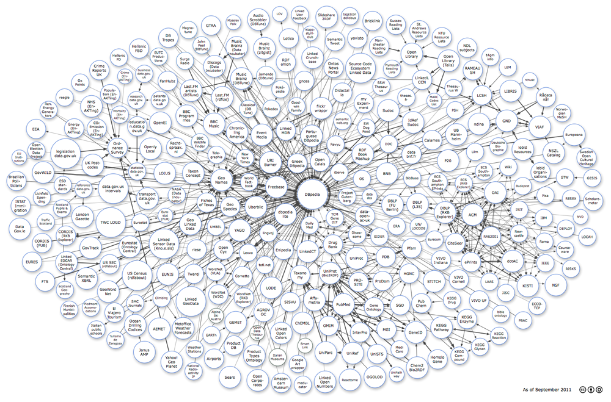

Linked Open Data チャレンジ Japan 2013 開催趣旨
Linked Open Data チャレンジ Japan（以降、LODチャレンジ）は、オープンなデータづくりとデータ活用に関する取り組みを表彰する、日本初のコンテストです。2011年度より開始して、民間や市民のほか行政に対しても広くオープンデータの呼びかけを行い、幅広い分野のデータ公開活動を積極的に表彰することで、日本におけるオープンデータを推進する流れとチャレンジする環境を創出してきました。
インターネット上で、多くの人々がオープンにしたデータ(Open Data)を、皆でつなげて(Linkして)大きな価値を生み出していく運動は「Linking Open Data」と呼ばれ、世界中のあらゆる分野で急速に広がっています。LODチャレンジは、オープンデータに関するデータづくり、データ活用のアイデアやアプリケーションに取り組む方々による成果発表の場を提供することで、オープンデータを推進する環境を創出してきました。第3回目となる今年度も開催することで、引き続きこの運動の広がりを応援し、産官学の様々な分野でのオープンデータ化、および民間によるデータ活用を促進します。取り組みや成果をオープンにして共有し、様々な人々による再利用を推進して、成果を「駅伝風」につないでいくことで、オープンデータの価値をさらに高めるとともに、オープンデータに係わる人々を紡いでコミュニティを醸成します。
本コンテスト応募作品は、分野を問いません。異なる分野のデータをマッシュアップした作品や、様々な分野でOpen Data、Linking Open Data運動を進めている方々の活動も作品として募集します。また、企業がビジネスとして推進している作品、個人や学生の皆さまからの発想豊かな作品など、幅広い応募を期待します。応募して頂いた作品をコンテスト形式で評価し合うことで、これからの日本の新しい未来を創造していきましょう。
 The Linking Open Data cloud diagram
（１）オープンデータの広がり
Webが私たちの生活や社会に浸透するにつれて、社会や産業の基盤となりうるデータは、人々や組織が単独で保有するよりも、互いにオープンにして共有化するほうが、所有者にとっても社会にとってもデータの価値が高まるとの考え方，すなわちオープンデータが世界中で広がってきています。G8サミットが2013/6/18に採択した首脳宣言で、各国首脳が「オープンデータ憲章」に合意しました。 日本においても、2013/6/14に閣議決定された「世界最先端 IT 国家創造宣言」では、日本が国をあげて取り組むべきIT戦略にオープンデータ活用が挙げられるなど、内閣府や各省庁で積極的なデータ公開と活用に向けた施策が推進され、地方自治体でも地域のデータを公開する自治体が増えてきました。また、2013/2/23に世界100都市以上で、日本は8都市で開催された「International Open Data Day」に代表されるように、オープンデータを活用したアイデアやアプリケーションを創出するアイデアソン，ハッカソンなど、市民参加による数多くのチャレンジが各地で開催されており、データ共有化の促進とイノベーション創出への期待が寄せられています。このように、いま世界中で、オープンデータを推進する活動が盛り上がりをみせています。
（２）Linked Open Dataの広がり
Linked Open Data (LOD) は、Webの仕組みを利用して、コンピュータがオープンデータを処理しやすい形式で共有する、新しい方法です。オープンデータをLODの形式で発信することにより、データの再利用性が高まるとともに、データどうしを相互につなげる（Linkする）ことでWeb上に社会知・集合知としてデータベースが形成され、データの価値が飛躍的に高まります。ネット上の人々がオープンにしたデータ（Open Data）を、皆でつなげて(Linkして)、大きな価値を生み出していく活動は「Linking Open Data運動」と呼ばれ、世界中で広がっています。
欧米では、政府や自治体が所有する公的データ、地理情報データ、生命科学等の科学データ、メディアコンテンツなど、様々な分野の情報を人々がオープンにし、皆でつなげて、社会全体で価値を共有する取り組みが広がるとともに、こうしたオープンデータを活用した公共サービスやビジネスへの適用が活発に進められ、新たなサービスが立ち上がり始めています。日本においても、これまでサイエンス分野と地域情報を中心に、CiNiiが学術文献などの書誌情報をLODの形式で開示している他、理研サイネスが生命科学における情報を、横浜LODプロジェクトが横浜の地域情報を提供しています。他の分野においても、データをオープンにする取り組みが立ち上がるとともに、分野を横断してつなげようとする活動が新たなサービスを創出し、大きな価値を生みだすと期待されています。
（３）産業界の動向
産業界においても、人々が読んで理解できる従来型のWebから、コンピュータにとっても情報を処理しやすい新しいWebへと移行しつつあります。その上で情報を共有したり活用したりすることが、新たなビジネスの創出につながると期待して、欧米企業はデータを中心としたサービスに取り組み始めています。
New York TimesやBBCはそれぞれ、人名や見出し語などのメタデータをLODとして公開し、LODをハブとしてWebコンテンツを連携するプラットフォームづくりを進めています。こうしたメタデータは検索の高度化にも有用であるとして、Googleは、2010年7月に、オープンな情報データベースFreebaseを運営するMetaweb Technologiesを買収しました。2012年6月には、Microsoft、Yahoo!と共同で、Web用メタデータの共通化に関するサイト(schema.org)を立ち上げています。また、人気クイズ番組ジョパディ！でチャンピオンを破ったスーパーコンピュータWatsonでは、LODが事前知識の一部として利用され、テキスト情報からの膨大な知識の獲得に寄与しました。IBMは、Watsonを医療での診断支援やコールセンターに応用するなど、知識データを活用した新しいビジネスを始めようとしています。
一方、統計情報や専門的な情報などを必要とするユーザが集まる場所を提供する「データマーケットプレイス」が米国を中心に注目されています。価値あるデータを商品とすることでバリューチェーンを産み出し、データの提供者と利用者とが win-win の関係を築くなど、新しいビジネスモデルへ高い期待が寄せられています。Google、Microsoft などの大手IT企業が、公的情報を中心としたマーケットプレイスの構築を進めている他、SemTechやStrataなどのデータ専門のビジネスカンファレンスが開催されるなど、市場動向に関心が寄せられています。
（４）本チャレンジの目的
社会や産業の基盤となりうるデータを共有化し、つなぎあわせることが、データの価値が高め、社会や経済に寄与するとの考え方が世界的に広がっています。本チャレンジの目的は、各分野におけるLinking Open Data運動を促進して、データをオープン化し、分野を横断して情報をつなげる(Linkする)とともに、その相乗効果として、価値のある新しい技術・サービスを創出することにあります。
「Linked Open Data チャレンジ Japan 2013」は、様々な分野でLODの仕組みづくりやデータづくりにチャレンジされている方々による活動の発表の場を提供します。データ、アイデア、アプリケーション、ビジュアライゼーション、基盤技術の各部門に作品を応募していただき、コンテスト形式で評価し合うことで、これからの日本の新しい未来を皆様と一緒に創造していきます。また、本目的の実現には、WebやIT分野の技術者だけでなく、専門各分野から多くの方に参加して頂き、議論を深めることが欠かせません。本チャレンジから、LODの技術情報を発信するとともに、データやアイデアに関する情報交換や共有を行うコミュニティづくりを目指します。
（５）Linked Open Dataがもたらす社会
本チャレンジの開催を通して、技術情報とアイデア活用に関する情報交換の場を提供することで、分野を横断したデータの共有を促進するとともに、これまでのWeb上では得られなかったデータの共有が可能となります。また、オープンデータに関する様々なチャレンジの成果（データやアイデア，アプリケーション）や、それらの取り組みに係わる人々を相互につなげることが、共有化した情報・知識にもとづいた日本の社会基盤の形成を大きく前進させ、そこから新しい発想のサービスやアプリケーションを創出します。その結果として、需要の喚起、効率的な資源配分などを実現し、社会・経済へ寄与するものと期待しています。


![国立情報学研究所 CiNii（NII論文情報ナビゲータ[サイニィ]）](../challenge2013/common/img/sponsores/Cinii.png)